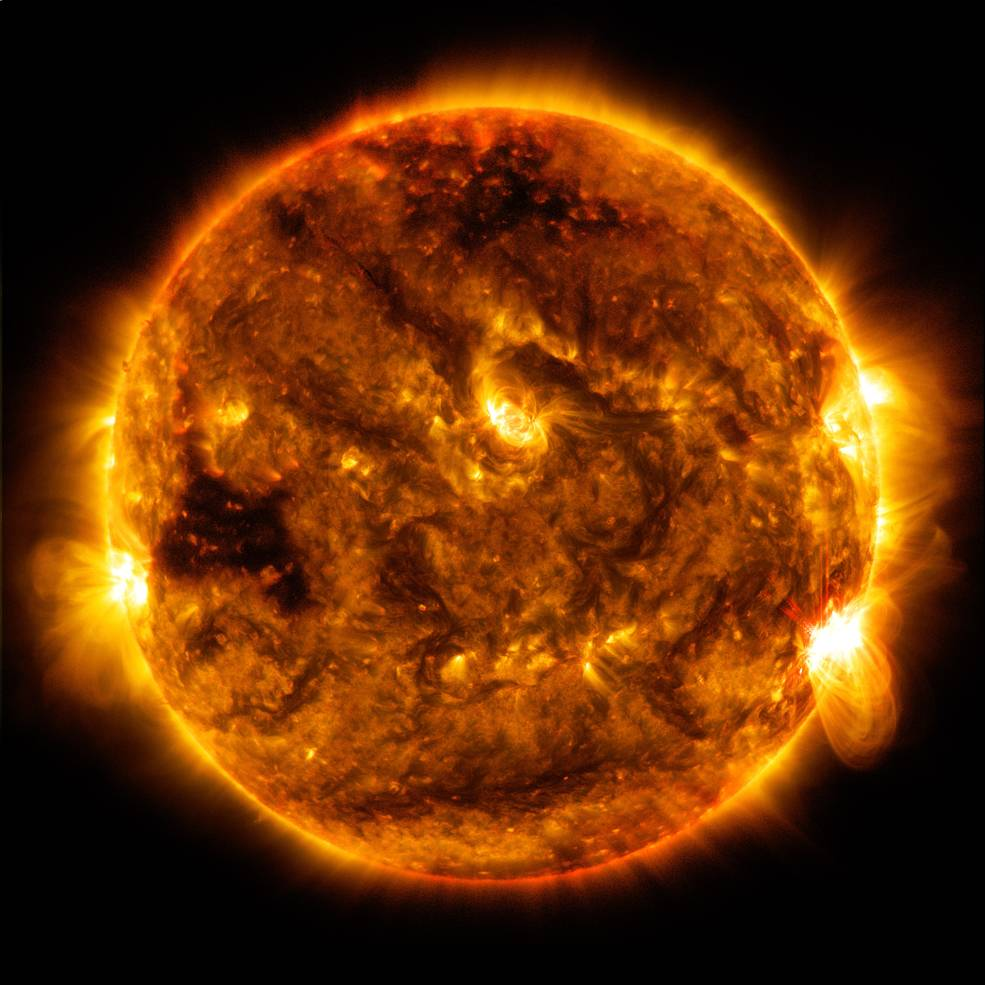

SOLAR SYSTEM PLANETS
There are more planets than stars in our galaxy. The current count orbiting our star: eight. The inner, rocky planets are Mercury, Venus, Earth, and Mars. NASA's newest rover — Perseverance — landed on Mars on Feb. 18, 2021. The outer planets are gas giants Jupiter and Saturn and ice giants Uranus and Neptune. Beyond Neptune, a newer class of smaller worlds called dwarf planets reign, including longtime favorite Pluto. Thousands more planets have been discovered beyond our solar system. Scientists call them exoplanets (exo means "from outside").

SUN
The Sun is the star at the center of the Solar System. It is a nearly perfect ball of hot plasma, heated to incandescence by nuclear fusion reactions in its core. The Sun radiates this energy mainly as light, ultraviolet, and infrared radiation, and is the most important source of energy for life on Earth.

EARTH
Earth - our home planet - is the only place we know of so far that's inhabited by living things. It's also the only planet in our solar system with liquid water on the surface.